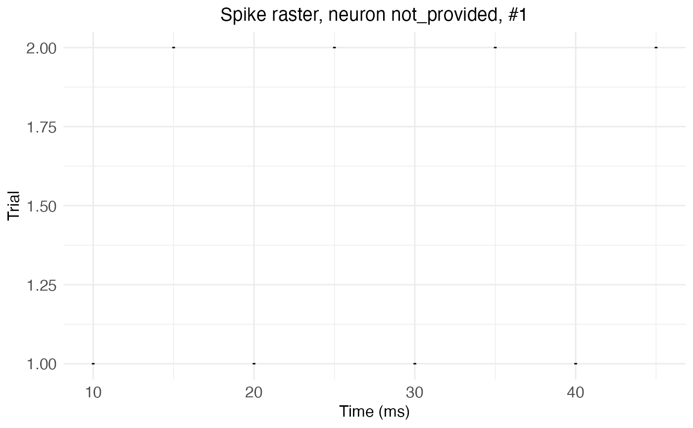
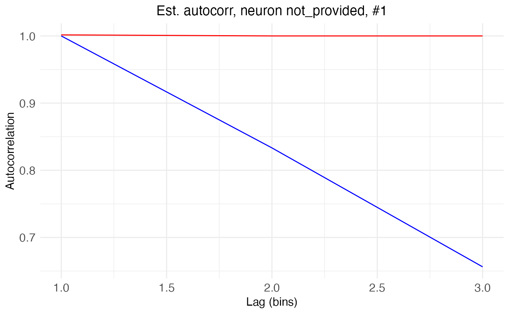

print, summary, and plot methods for neuron objects (class "neuron", as created by new.neuron/load.rasters.as.neurons). plot.neuron dispatches to plot_raster or plot_autocorrelation depending on type, defaulting to the raster view. A neuron object is a plain S3 wrapper around the package's internal C++ representation, so auto-printing it at the console (typing it by itself, rather than calling print() explicitly) already goes through ordinary S3 dispatch to print.neuron, with no special handling needed.
Arguments
- x
A neuron object (or, for
print.summary.neuron, asummary.neuronobject fromsummary.neuron).- ...
Unused for
print/summary; present for S3 consistency. Forplot, additional arguments passed on toplot_rasterorplot_autocorrelation.- object
A neuron object.
- type
One of "raster" (default) or "autocorrelation", specifying which view of the neuron to plot.
Value
print.neuron and print.summary.neuron return their argument, invisibly. summary.neuron returns a summary.neuron object, printed by its own print method. plot.neuron returns whatever plot_raster/plot_autocorrelation returns (a ggplot object if return_plot = TRUE, otherwise NULL, invisibly).
Examples
raster_df <- data.frame(
cell = c(1, 1, 1, 1, 1, 1, 1, 1),
time_in_ms = c(10, 20, 30, 40, 15, 25, 35, 45),
trial = c(1, 1, 1, 1, 2, 2, 2, 2)
)
nrn <- load.rasters.as.neurons(raster_df, bin_size = 10)[["neuron_1"]]
compute.autocorr(nrn)
fit.edf.autocorr(nrn)
print(nrn)
#> <neuron> #1 (not_provided)
#> type: generic
#> trial data loaded: TRUE
#> lambda: 0.1 spike per ms
#> lambda_bin: 1 spike per bin
#> autocorrelation computed: TRUE
summary(nrn)
#> Neuron #1 (not_provided)
#> type: generic
#> simulated: FALSE
#> unit_time: ms
#> t_per_bin: 10 ms
#> sample_rate: 10000 Hz
#> trial data loaded: TRUE
#> lambda: 0.1 spike per ms
#> lambda_bin: 1 spike per bin
#> autocorrelation computed: TRUE
#> exponential decay fit: TRUE
#> A: 0.9241
#> tau: 1.565 ms
#> bias_term: 1
plot(nrn) # raster view (the default)

plot(nrn, type = "autocorrelation")
